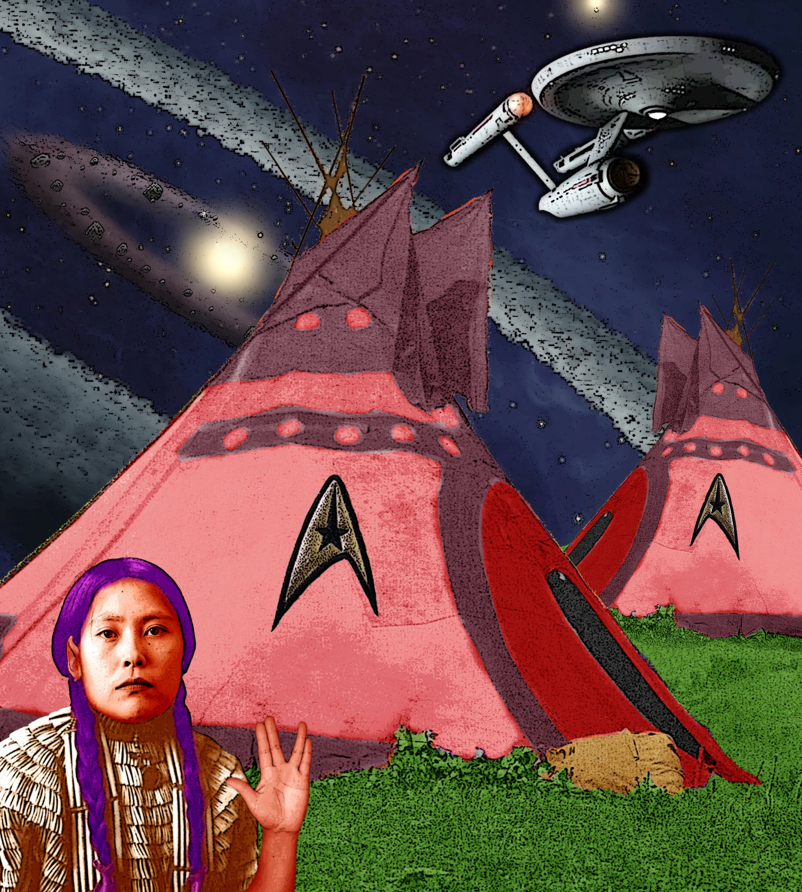
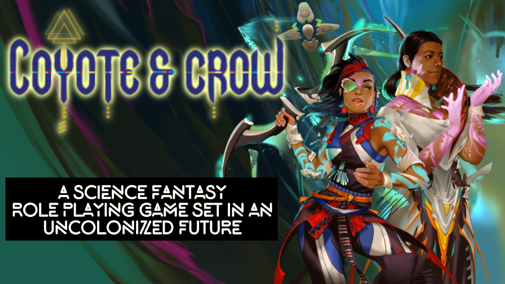

Indigenous Futurism
“Indigenous Futurism envisions narratives and environments—built and natural—to realize architectural sovereignty, guided by the lenses of technology, alternative worlds, science fiction, and studies of temporality.”
-New York Center for Architecture
Many indigenous people utilize sci-fi to envision futures that amplify and understand Native voices. From Chakotay of Star Trek to the 2022 film Prey, Indigenous people are involved in many sci-fi and futurist ideas. A list of examples of this genre and movement can be seen in the links below.


Center for Architecture Lab: Indigenous Scholars of Architecture, Planning and Design (ISAPD)
An Old New World
Native Art Incorporating Star Trek And Other Sci-Fi In Las Cruces
Coyote & Crow